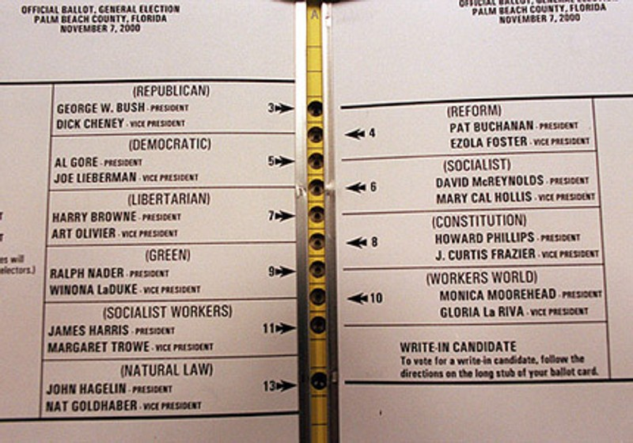

The Importance Of Good Web Design
Ian Sealy
What Are The Consequences Of A Bad Design?
- Extreme example of bad design (but not to do with Web)
- From USA Presidential elections in 2000
Butterfly Ballot From Palm Beach County

- To vote for the second candidate on the left, you punch the third hole
Consequences Of This Design
- 4,000 people punched the second hole thinking they were voting for Al Gore
- 19,000 people punched more than one hole
- Election result could have been different
A Good And A Bad Web Site
- Suppose you want to find the phone number of the people running these two artist management Web sites:
- Visit both sites and time how long it takes you to find a phone number
What Was Wrong With CKA Artist Management?
- Inconsistent user interface; each page looks different
- Unclear which page elements are links
- Non-standard hyperlink colours
- Would you use CKA Artist Management?
More Examples
- Obvious problems:
- More subtle problems:
(Focus on the About pages)
What Was Wrong With MGBD Parts & Services?
- Can't resize text
- Can't cut and paste text
- Underlined text isn't clickable
What Was Wrong With Mimar Architects & Engineers?
- Horizontal scrolling
- No text unless interact
Good Design On "Informational" Web Sites
- Is good design important for "informational" Web sites?
- Bad design leads to poor usability
- If users can't use your Web site then they won't - a different site is always one click away!
- People spend less time learning a Web site than learning software
- Web sites must be intuitive and easy to use
- If users are forced to use a bad site (e.g. an intranet) then you'll get reduced productivity
Importance Of Testing
- Hard to identify good and bad design (humans are unpredictable)
- Best way is to do user testing
- Small tests can produce significant results
- Weird priorities on the Web:
- The need to develop a brand and corner a niche means that sites are often launched quickly with little or no user testing
- The people who are most interested in your site (the people who come straight away) are the ones who suffer the bad design and never come back
What Makes A Good Web Design?
- Well organised and easy to navigate
- Frustrating if know something useful is there but can't find it
- Intuitive
- Frustrating if you're not even sure if something useful is there
- Fast
- Easy to read
Content Is King
- Good design is important, but content is most important
- Even if a site is well designed then it won't be used unless the content is good
Web Standards
- Course emphasises the use of Web standards (i.e. best practice)
- Using Web standards leads to:
- Web sites that are easier to maintain (due to, for example, separation of content and design)
- Web sites that work irrespective of browser, operating system, screen size, etc...
- Web sites that are more accessible (for example, to blind people or people using a slow connection)
- Web sites that are more easily optimised for search engines